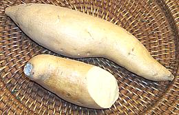

SAFARI
Users
Morning Glories
The Morning Glory family (Convolvulaceae) are eudicots found worldwide in all climates, but the culinary ones all belong to the genus Ipomoea, which inhabits only tropical and subtropical regions. A few of the other genera produce seeds which are sometimes ingested but not for the purpose of nutrition.
Sweet Potatoes & U.S. "Yams"
Sweet potato vines are members of the Morning Glory family native to Central America and the Caribbean. They are unrelated to true potatoes which are Nightshades. They produce an edible "storage root" which is non-toxic and under proper "curing" conditions converts part of its starches to sugars making it sweet.
The United States grows less than 1% of worldwide production. The rest is grown in Asia and Africa, with China accounting for more than 80% of world production.
It is unfortunate that the developers of the orange fleshed Sweet Potato, to differentiate if from the white ones, called it "Yam", from "Nyami" an African word for real Yams, and used by African slaves in the American South for sweet potatoes. Now, markets in North America call any sweet potato of any color but white "Yam". This continues to cause serious confusion.
Sweet potatoes are further evidence of contact between South America and the Pacific Islands in pre-Colombian times. The Quechua (Peru) name for sweet potatoes is Kamar. The name Kamara and similar are common in Polynesia and New Zealand. It is certain the Pacific Islands had sweet potatoes before European contact, and that they couldn't have floated that far on their own. They must have been taken from the Americas by boat. Conversely, it is now known that Chickens, DNA traceable to Polynesia, were available in South America before European contact.
Sweet Potato, White [Boniatos (Caribbean); C. Ipomoea batatas] These are the standard grocery store white sweet potato. Sweet potatoes (red or white) are not particularly sweet at harvest but are "cured" at 85°F for 4 to 7 days during which some of the starch is converted to sugar. Pictured are 1/2 pound potatoes. Select firm sweet potatoes with no soft spots. Do not
refrigerate Sweet Potatoes. Temperatures below 55°F will make
them hard and ruin the flavor. They should be stored loose (not in
plastic) and kept away from sunlight. Stored at 55°F to 60°F
and 90% humidity they'll keep for several months but in a normal
household environment they should be used within a couple of weeks.
U.S. "Yam"[Red Sweet Potato; C. Ipomoea batatas] This is not actually a yam but a sweet potato variety with red skin and orange flesh. The term "Yam" was adopted from the African "nyami", the name used for sweet potatoes by Southern slaves. This was to differentiate it from the white sweet potato in commerce. Unlike True Yams they have smooth skin as other sweet potatoes do. Pictured are a whole 2 pound and a cut piece from a 1/2 pound sweet
potato. This "Yam" has orange flesh that is moister and sweeter than
that of the White Sweet Potato, but all other characteristics are
pretty much the same.
Murasaki Sweet Potato[Japanese Sweet Potato, Satsumaimo; C. Ipomoea batatas]
In North America, this sweet potato is currently sold mostly through
Yuppie oriented outlets like Trader Joes. They can be cooked by any
method used for regular North American sweet potatoes, but are a bit
drier, almost like a russet potato. They are quite sweet, with a
pleasant nutty flavor. The raw flesh is just slightly yellow, but
becomes more intensely yellow with cooking. They hold up fairly
well to wet cooking, if it's not too long. The photo specimens were
purchased from Trader Joe's at 2017 US $1.33 / pound. Average weight
was 9 ounces and 2-3/4 inches diameter, varying from almost spherical
to short elongated.
Okinawan Sweet Potato[Hawaiian Sweet Potato; Uala (Hawaii); C. Ipomoea batatas cv. Ayamurasaki]
These light beige skinned sweet potatoes were carried from the
American tropics to the Philippines and China by the Spanish, reaching
Okinawa around 1600. They are now grown on the Japanese main islands,
but still considered "Okinawan", with the Murasaki considered
"Japanese". They are quite available in Asian markets here in Los
Angeles, always confusingly labeled "Purple Yam".
Real Purple Yams are not
currently much available in North America. The purple color comes from
anthocyanin flavonoids, which have antioxidant properties, but how
well these survive digestion is debatable.
Details and Cooking.
Stokes Purple Sweet Potato[#94622 C. Ipomoea batatas]
These are a patented variety of Stokes Foods, organically grown under
contract in California and North Carolina. It is unknown where they
came from, but sweet potato experts are pretty sure they originated
from Asia. Chunks will simmer tender in 10 minutes, but start to break
up at 25 minutes. These are moderately sweet sweet potatoes, and their
flesh is a little drier than white sweet potatoes. They ares sold
through Whole Foods Market and other Yuppie oriented outlets, The
photo specimens cost 2017 US $2.49 / pound. The purple color comes
from anthocyanin flavonoids, which have antioxidant properties,
but how well these survive digestion is debatable.
Red Skinned Purple Sweet Potato[Ipomoea batatas] These resemble the Stokes Purple in many ways, but would have been
clearly labeled if that's what they were. They probably originated
from wherever the Stokes originated from. The photo specimens were
purchased from a large Asian market in Los Angeles (San Gabriel) for
2019 US $1.29 / pound. The larger of them was 8-1/4 inches long,
3-1/4 inches diameter and wighed 1-3/4 pounds.
Other Sweet Potatoes[Goguma (Korea); Kumara (New Zealand); Batata (most Spanish and Portuguese, from Taino); Camote, Kamote (Philippine, from Nahuatl); Boniato (Spain, Uruguay); Patata americana (Italy); Shakarkand (india); Satsuma-imo (Japan); C. Ipomoea batatas] Purple sweet potatoes are grown in much of Asia, including New Zealand, Australia and Japan. Both the skin and flesh are purple, and the color survives cooking. Other colors are also grown through the region. Yellow fleshed sweet potatoes with red skins are known in North America as "Korean sweet potatoes", but are also grown in other parts of Asia, including Japan and New Zealand. The yellow color is quite bright in Korea and Japan, but very pale in Indonesia. This is the most common sweet potato in China. Yellow sweet potatoes are grown in Australia, but most grown there are the American orange fleshed variety. New Zealand grows three varieties. A red skinned sweet potato with
white flesh streaked with purple is most common, but the yellow
fleshed and American orange fleshed are also grown.
Photo by Earth100 distributed under license Creative
Commons
Attribution-ShareAlike v3.0 Unported.
Sweet Potato Leaves (Yam Leaves)[Boniatos (Caribbean); Talbos ng kamote (Philippines); Rau Lang (Viet); Di gua ye (Taiwan); Hong shu ye, Fan shu ye (China); C. Ipomoea batatas]
What is sold as "Yam Leaves" in the markets is invariably Sweet Potato
Leaves, because many real Yams have somewhat toxic leaves. Sweet Potato
leaves are a popular green in much of the world, and they can be used as
a substitute for the closely related
Water Spinach, which is illegal in much of North America.
Details and Cooking.
Sweet Potato Stems[Goguma-sun Goguma-julgi (Korea); C. Ipomoea batatas]
Use of Sweet Potato stems without the leaves is a Korean specialty.
Both fresh stems and dried stems are used for banchan (small side dishes).
The leaves are discarded and the stems are peeled, which is tedious. In
Korea they are also sold pre-peeled in bags of water. The season for fresh
stems is short, so stems are used dried the rest of the year. While cooked
similarly, the flavors and textures are significantly different. This is
not the only plant where the leaves are eaten elsewhere but only the stems
in Korea. Details and Cooking.
Sweet Potato Starch Noodles[230; Dangmyeon (Korea)]
Instructions for these are fairly clear. Boil for 6 to 8 minutes (I
say more like 8 to 10 minutes), drain and refresh with cold water,
then mix with salad, cold dish, appetizer or as ingredient in hot pot.
These are essential to the famous Korean dish Japchae. The photo
specimens were made in China, 0.06 diameter by 22 inches folded
length. Ingred: sweet potato starch, sulfur dioxide, water. They
cook to a firm jelly consistency. Flavor and texture are pleasant
and these noodles are much more durable in recipes than bean starch
noodles.
|
Water Spinach
[Swamp Cabbage; Ong Choy - variously spelled (Cantonese); Pak Hung, Pak Bung (Thai); Kang Kong (Malay, Filipino); Kang Kung, Rau Muong (Vietnam); Toongsin Tsai (Mandarin); Chinese Watercress, Water Convolvulus, Water Morning-glory; Ipomoea aquatica also Ipomoea raptans (not common in North America)]
This semi-aquatic plant is a controlled substance within the USA. Importing plants or seeds and/or growing plants without a permit are all illegal - see USDA Plant Profile. Growing it or even transporting it is totally illegal in some states.
Here in California it is a quarantined crop but may be transported without a permit within the state. Enough growers have permits it is in good supply, and that's a good thing because if it wasn't our large Asian population might try sneaking it into our waterways like they did with snakehead fish.
There are several varieties of this vegetable, including a long leafed
variety that can be grown in damp soil (Ching Quat) and a wider leafed
variety that requires free water (Pak Quat). The wider leaf variety is
preferred in Asia but is rarely available here, probably to keep the
growing areas farther from our waterways. The photo specimens are about
19 inches long.
Details and Cooking.
Yams
These tropical vines, native to Africa and Asia, are quite unrelated to the Sweet Potato vines and are in the same clade as lilies (monocots). They produce root tubers which are generally toxic, some less so, some more so, but it's best to avoid eating most of them raw. Some require tedious pounding and leaching to make them edible but these are not sold as vegetables in the USA. The varieties sold here just require a little cooking for detox.
Yam, White / Yellow[Boniato (Spanish), Nyami (Africa); Ñame (Panama); D. rotundata, D. cayenensis and similar]
True Yams are grown in Africa, Southeast Asia, the Caribbean and Latin
America, but are only beginning to take root in North America. Unlike
sweet potatoes they have a rough scaly skin, and can grow to as much
as 150 pounds, though they are generally marketed at only a few
pounds. Both White and Yellow varieties are native to Africa, but
now grown in the Tropics worldwide.
Details and Cooking.
Yam LeavesWhat is sold in the market as "Yam Leaves" are actually Sweet Potato leaves. Real Yam Leaves are eaten in some districts of India and Southeast Asia where they have suitable varieties, but most leaves of real Yams are toxic to some extent. New Zealand Yam- [oca, oka (Andean), Oxalis tuberosa]Neither a yam nor a sweet potato but a completely unrelated tuber from the Andean area of South America. See Oxalis Family. Nagaimo[Nagaimo, Yamaimo (Japan); Glutinous Yam, Cinnamon vine, Japanese Mountain Yam, Chinese Yam; Ma (Korea); Shan yao, Huai shan, Huai shan yao (China); Dioscorea polystachya] Native to Southern China this yam has been cultivated in Japan from very early times. Known in the U.S. mainly as an invasive weed, this vine with arrowhead shaped leaves grows large tubers below ground and small tubers above ground. It spreads mainly by dropping these small "air potatoes" and rarely flowers. Nagaimo is roughly cylindrical and may be up to three feet long, but the photo specimen was 24 inches long, 2-7/8 inches diameter and weighed 3-1/4 pounds. The skin is tan and the flesh is white and, unlike other yams, sticky and more than a bit slimy. The two Japanese names, nagaimo and yamaimo (shorter, thicker), are applied depending on the root shape. Details and Cooking. Purple Yam / Water Yam[Violet Yam, Water Yam (white varieties); Ube, Halaya (Philippine); Ratalu (India); Rasa valli kilangu (Tamil); Uhi (Hawaii); Ji, Ji abana, Isu ewura (Nigeria); Dioscorea alata]
Native to Southeast Asia, there are many cultivars of this yam,
varying from deep purple to white. Intensely purple varieties are
very popular through South and Southeast Asia, while most grown
in Africa are white. These are the most common yam in Africa, but
are little available in North American markets, even in Los Angeles
with our large Philippine population. They are listed as noxious
weeds in a few southeastern states, particularly Florida. The purple
color comes from anthocyanin flavonoids, which have antioxidant
properties, but how well these survive digestion is debatable.
Details and Cooking.
Yampi[Cushcush, Indian yam, napi; Yampi, Yampie (Jamaica); Maona (Peru); Mapuey (Puerto Rico); Aja (Cuba); Cara doce (Brazil); Dioscorea trifida] Native to the Caribbean and tropical Central America this yam is grown for its starchy roots and used similarly to Cassava. It contains the bitter toxic alkaloid discorene which is eliminated by cooking. The cut ends of the photo specimens were dipped in wax to prevent drying out and shriveling. The largest of the photo specimens was 11 inches long, 2-1/2 inches diameter and weighed 1 pound. Raw yampi are very mucilaginous but this goes away when cooked. Cooked
the texture and flavor are pleasant and much like a waxy potato but more
tender and crumbly and noticeably sweeter. While yampi is a very fine
edible, it is overshadowed in its growing region by manioc (cassava) which
produces a higher yield and is more durable in storage.
|